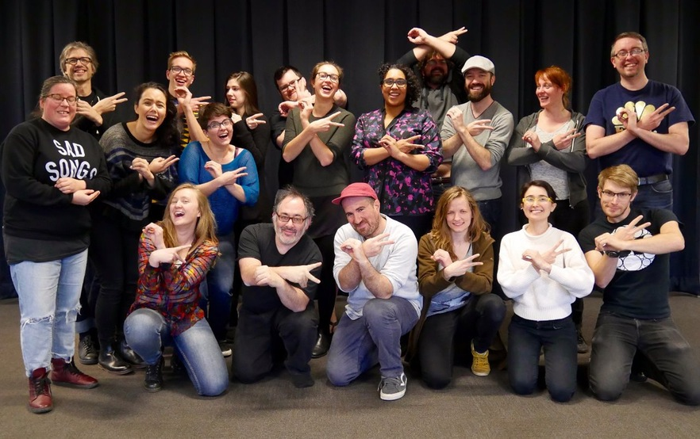

OF Doc Sprint @ DU
Documentation and information about the openFrameworks Education Summit hosted by Emergent Digital Practices at the University of Denver in February 2016
This project is maintained by EmergentDigitalPractices

openFrameworks Education Summit 2016
The openFrameworks Education Summit brings together Artists & Educators from the University of Denver, Carnegie Mellon University, The School of the Art Institute of Chicago, The School for Poetic Computation, Parsons School of Design, Penn State, The School for the Visual Arts, Microsoft, Carnegie Museum of Art, and internationally from Vienna Austria, and Dresden Germany. Over the four days the participants will work together to produce and improve the educational materials for the open-source creative coding tool openFrameworks. This will improve the approachability of openFrameworks as well as help students around the world learn how to create with this powerful digital arts and design tool.
Participants
- Christopher Baker
- Chris Coleman
- Brannon Dorsey
- Sarah Groff-Palermo
- Andrew Hieronymi
- Anika Hirt
- Sarah Howorka
- Golan Levin
- Zach Lieberman
- Nicole Messier
- Caitlin Morris
- Stacey Mulcahy
- David Newbury
- Caroline Record
- Deborah Schmidt
- Charlotte Stiles
- Dan Wilcox
Support Provided By
Support Provided By:
- The Arts, Humanities and Social Sciences Division @ DU
- Emergent Digital Practices @ DU
- The Marsico Visiting Scholars Fund
- The Frank-Ratchye STUDIO for Creative Inquiry at Carnegie Mellon University
- The School of the Art Institute of Chicago, Art and Technology Studies Department
- The School for Poetic Computation
Getting Involved!!
Greetings openFrameworks Community!
This week February 18 - 21st 2016, a diverse collection of openFrameworks educators will be gathering at the Emergent Digital Practices Program in Denver, Colorado. Our goal is to make openFrameworks easier to teach and easier to learn. Our objectives are to:
- Review every example in the OF core, adding clear explanations of what each example demonstrates, how to interact with it and, as needed, what individual lines or blocks of code are doing. Update any older syntax, as required.
- Publish OFBook.
- Add in-line documentation to all stable public classes and functions.
Generous community members, we invite your remote participation during the event! There will be opportunities for community members working at all technical levels. To facilitate remote participation we will document our meetings, coordinate todo lists, and progress here: hackpad.com/2016-openFrameworks-Education-Summit-cPRTemR6phO.
If you want to collaborate remotely you can do so by:
- Review every example in the OF core, adding clear explanations of what each example demonstrates, how to interact with it and, as needed, what individual lines or blocks of code are doing. Update any older syntax, as required.
- Write tutorials that cover some of the core functionality but do not yet exist.
To kick off the event, we will Periscope the initial event meeting at 9am MST on February 18th. We will also maintain a presence on the openFrameworks IRC and Slack channels. Tune in to find out how to participate.
Thanks for being part of the community and we look forward to your participation!
Final Report!!
On February 18th 2016 through the 21st a group of openFrameworks users and educators gathered in Denver Colorado to work on the ways people learn and use openFrameworks. The group of 20 people worked intensely for 3.5 days, 12 hours per day, collectively committing more than 800 people-hours to creating and improving openFrameworks learning resources.
The most obvious changes can be seen with the “learning” page on the openFrameworks website. There you will see a major re-organization of previous links as well as new information:
- The Getting Started! section will lead brand new users to the right resources.
- The External Resources section links out to other tutorials, videos, and a wiki where OF users can add links.
- The new “How-tos” section offers short instructions and code samples for common tasks.
- The newly completed ofBook table of contents, which is a collection of carefully written topical tutorials spanning more than 375 pages.
A significant amount of time was spent looking deeply at the examples that ship with openFrameworks and how they function as a major learning tool as well. Many of the examples were refined and new standards were set on how these examples and those that are part of ofxAddons might look and feel to better communicate what is happening in them. This includes:
- Adding a readme file for each example with images and text describing the ideas behind the examples.
- Adding more code comments inline to the examples to help explain the pieces of the code and what they are doing.
- Adding more overlay text in the examples explaining what you are looking at when running the program.
Another major effort went towards improving the openFrameworks documentation. First, a set of processes were put into place/adjusted to make the guidelines and workflows for creating and improving the documentation clear to those who want to continue to help improve the documentation. The documentation is being divided behind the scenes to separate the longer explanations with images and links from the function definitions and parameter descriptions that are part of the tooltips and for quick access. This process was then applied to many of the major openFrameworks classes to begin to make sure that all methods in openFrameworks include documentation. The process is ongoing but many parts of the documentation are now carefully and more fully explained. These will roll out with the next OF release and we hope it helps the documentation pages become much more useful.
It was amazing to have so many people work together for several days on making openFrameworks more accessible, teachable, and learnable. Major applauds go to those who came to Denver and devoted their lives to this for a few days, but also to the people all over the world improving OF every single day.
